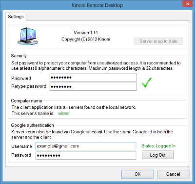

KinoConsole allows you to play your favorite PC games anywhere, anytime. Latest games like Skyrim, Diablo III, Sims, Civilization V and X-COM are now playable on your Windows Phone.
To start playing games download and install Kinoni Remote Server from http://www.kinoni.com to your PC. KinoConsole automatically searches for server in the local network and lists available games.
Install and configure Kinoni Server
Install Kinoni Server application to your Windows computer from http://www.kinoni.com. After installation you are presented server configuration screen with list of games. Here you can add, edit and remove games available for streaming. If you have installed Steam platform games from Steam library are automatically added to list.
To add games drag and drop game icon to the dialog. To remove game drag it's icon to recycle bin located on bottom of dialog. You can also disable game temporarily by unchecking enabled-checkbox.
2. Configure the server

Set password to prevent unauthorized access and note the server's name. The mobile application lists automatically all servers found from the local WiFi network.
Optionally you can also setup Google authentication. This information is used to discover the server in the internet. Note that both the server and the Android device should be logged in to the same account. It is recommended to create a new Google account just for this purpose.
3. Connect from phone to the server